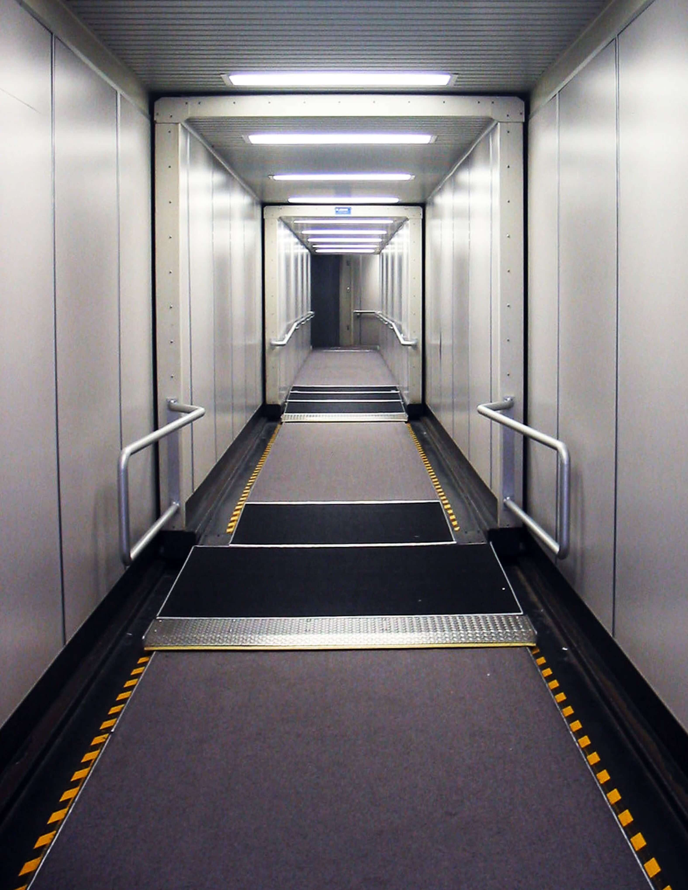

It’s been nearly a year since the world came to a screeching halt. While pharmaceutical companies have closed in on emergency approval from the FDA for their respective vaccine candidates, the reign of the coronavirus isn’t over yet. Indeed, pundits still claim that we aren’t likely to see a return to normalcy until late 2021 or early 2022.
I’ll admit that the train wreck of the past year has really started to get to me. Just about everything has been turned upside down.
I never thought I'd miss walking through a jet bridge so badly.
With Zoom lectures and asynchronous classes, weekends have evolved to become yet another workday. It’s like every day is another shade of beige.
My social life is currently… nonexistent. Between all my hometown friends deciding to go back to their campuses and my Berkeley friends being in California, I’m sad to admit that I’m watching friends become acquaintances. You can only stay so close when you’re 1000 miles apart.
Perhaps the worst of all is this overwhelming feeling of FOMO. But instead of missing out on a party, I’m missing out on life. And while I know I’m not the only one who’s plans have been sent to the bench this year, it still stings to think about what could have been.
I confess that these difficulties would be reduced to mere inconveniences in comparison to what some people have gone through this year. But I still think it’s okay to be a bit upset with 2020.
Since this post has been intensely negative thus far, it’s time to switch gears. I often find myself thinking about what I could have been doing if things were “normal.” And rather than dwell on the sadness of the present, I’m trying to be hopeful about the future. So here it is: my post-coronavirus bucket list.
- Join a club that has nothing to do with CS. Lockdown has had me spending a lot of time on CS and personal projects. Not that I don’t like working on these things, but at some point I’ll need a change of pace for sanity. Club golf and skiing stand out to me.
- Go to the RSF late at night. Lift weights. Play basketball. Finish it off with a Taco Bell run. For some reason, this is the one that I’m itching to do the most.
- Compete in a powerlifting meet. While lockdowns have become a hurdle for access to barbells, I’m more excited and engaged with my training than ever before (shoutout to Sandra Cappon and everyone at the Strength Edge in Calgary). Berkeley’s Barbell Club might become a must (no dropping deadlifts at the RSF is a major letdown).
- Go bar hopping. While I’m already of legal drinking age here in Canada, I haven’t done this. Even if it isn’t as fun as it’s made out to be, being stuck inside for a year makes it a bucket list item.
- California road trip. Probably something like SoCal, Tahoe, Yosemite, etc. I didn’t even had enough time to really explore the Bay Area. Surely there has to be something worth seeing in all of California.
- Play golf. I was lucky to play a lot of golf this summer. But the "good ol' days" of golf may be coming to a close. I know that the snowball of life isn't going to make it easier to set aside four hours a few times a week. I accept that I might not be mainting a low single digit handicap. No matter where I am, I want to keep in touch with the game I love, even if breaking 80 becomes a celebratory event.
- Do research/get to know a prof. A lot of people talk about how in the land of 1000-seat classes, it’s very hard to get to know your professors or get research positions. I used to blindly accept this, but then I realized that I’ve never really tried. People tell me that a lot of cool stuff comes out of this school. I really want to get to experience that firsthand.
- See my high school friends. Maybe meet them somewhere that isn't Calgary. An especially appealing thought right now.
As eager as I am to return to normal life, I do have some fears about what will happen when that time comes for things to unfreeze and the face masks to come off.
What if school becomes the same slog of online learning, but now I go home to study in a closet that costs $1850 per month? What if I go back to California and find that my Friday nights to be just as lonely as the doldrums of quarantine? Have I completely forgotten how to talk to girls?
Part of me is scared that "normal life" will be lackluster. But this bucket list puts these fears at ease. God knows what I'd be willing to pay to be able to do these things right now. But for today, I'll have to wait. At least I have something to look forward to.